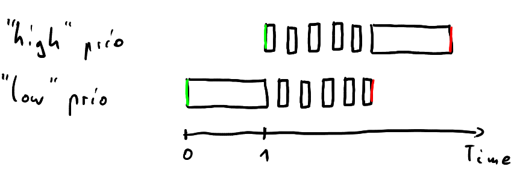
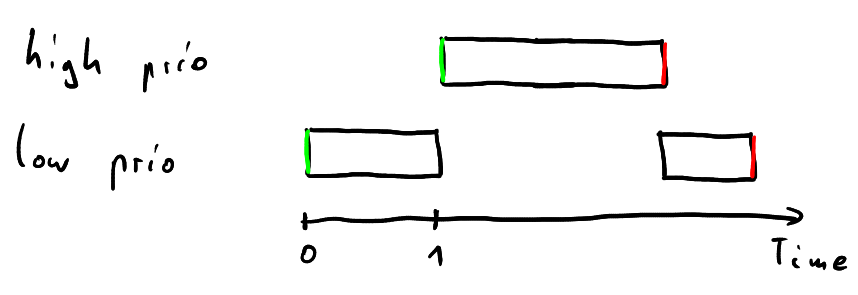
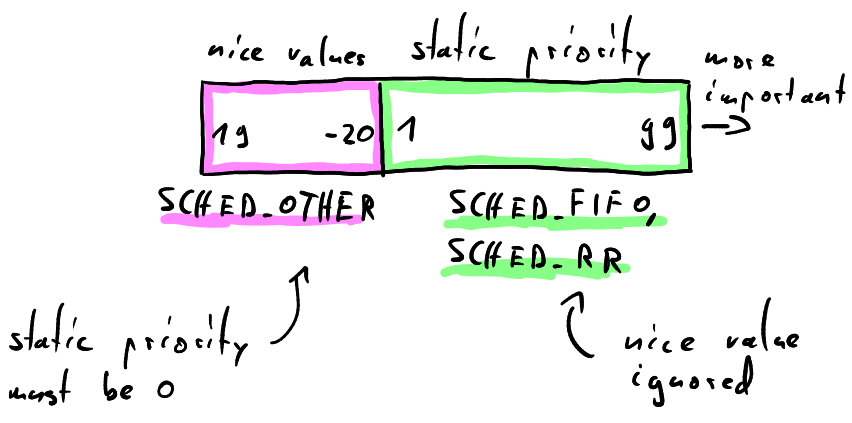
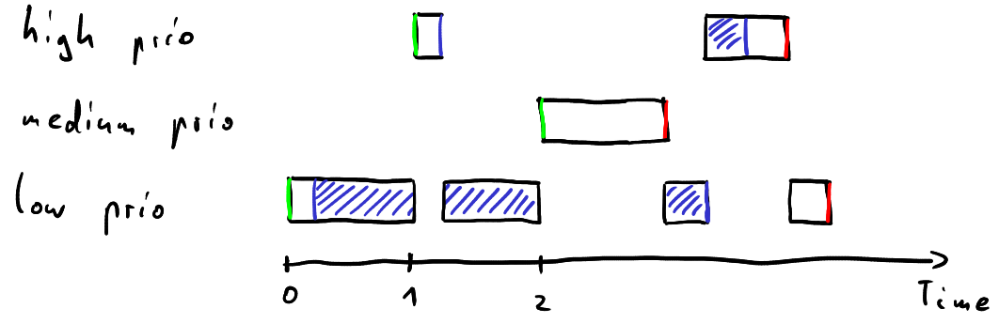
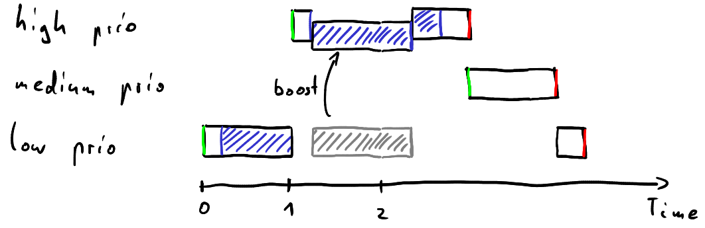
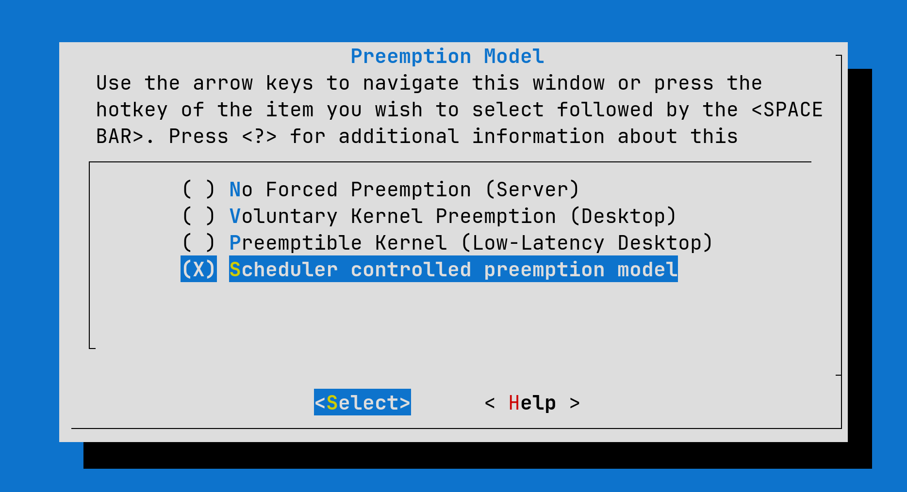
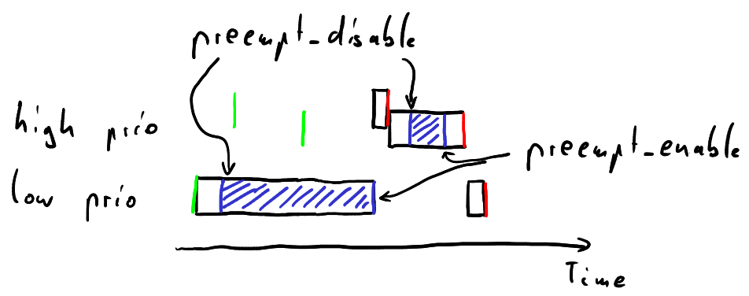
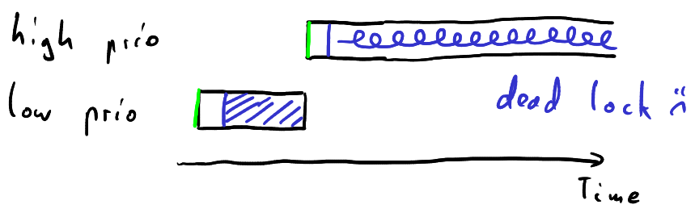
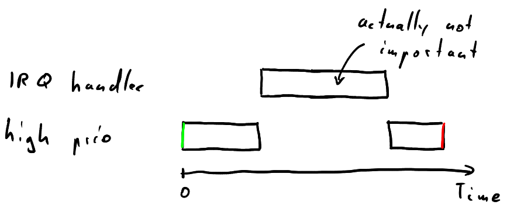

Real-Time on Linux
Christopher Besch •
30th June 2024
Real-Time on Linux
What's Real-Time?
Nancy Grace Roman Space Telescope's
ACS (Attitude Control System)
- Correct output
- Within deadline
So Real-Time means really fast...right?
fast != deterministic
- Classic Linux goal:
through-put, efficiency - Real-Time OS:
deterministically bounded worst case latency
Let's Build a Spaceprobe!
- Requirements:
- ACS: Real-Time
- Marketing wants AI: LLM needs throughput
- Options:
- Multiple Computers:
one GPOS, one Real-Time OS - Linux with
PREEMPT_RT - ...
- Multiple Computers:
User-Space: Real-Time POSIX
Default: SCHED_OTHER
Output: SCHED_OTHER

- Waste time on low prio task
Real-Time: SCHED_FIFO
Requires root or high enough rtprio in limits.conf
Output: SCHED_FIFO


- Focus on high prio task
- Danger: lock up CPU with high prio task
- Consider RT throttling
Priority Inversion
Output: Priority Inversion

- Medium prio task could run very long
- E.g. Mars Pathfinder
Priority Inheritance
Output: Priority Inheritance

Kernel-Space: PREEMPT_RT
Scheduler Preemption Model
CONFIG_PREEMPT_NONECONFIG_PREEMPT_VOLUNTARYCONFIG_PREEMPTCONFIG_PREEMPT_RT- Goal: fully preemptible kernel

Kernel Config
raw_spinlock_t
Why disable preemption?

raw_spinlock_t

raw_spinlock_t without preempt_disable
PREEMPT_RT Solution

rt_mutex
- Higher overhead: many context switches
Interrupts Request Handler (IRQ)
Threaded IRQ

- No preemption in NMI, hardirq, softirq context
What we've Covered
- Linux Advantage
- User-Space:
SCHED_FIFO/SCHED_RRPTHREAD_PRIO_INHERIT
- Kernel-Space:
PREEMPT_RTrt_mutexinstead ofraw_spinlock_t- Threaded irq handlers
What we've Left Out
- User-Space Memory handling
- Hardware considerations: e.g. SMI, ARM Cortex-R
- Benchmarking: e.g. Cyclictest
- Linux Limitations: mainly provability
- Linux/PREEMPT_RT alternatives